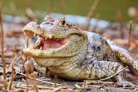

El caimán de anteojos (Caiman crocodilus) habita ríos, ciénagas y manglares de agua dulce en Centro y Sudamérica. Es un reptil semiacuático, carnívoro, nocturno y gregario, que se alimenta de peces, crustáceos y pequeños mamíferos. Pasa el día asoleándose en las orillas para regular su temperatura.